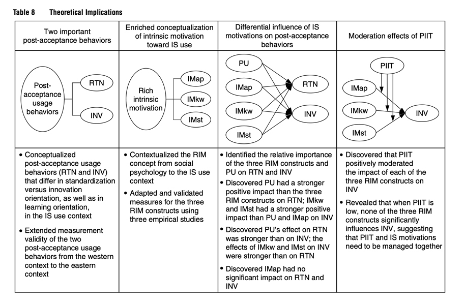

Research Project 1 (RP1) — U15
Neu-Ulm University of Applied Sciences
September 3, 2026
When developing or revising the structure for your own paper, remember that a good option is always to follow as closely as possible the standard paper structure instead of inventing new structures. Innovative structures are not always well received in the academic community because the novel structure makes reading the paper more difficult. Recker (2021, p. 178)
By the end of this unit, you will be able to:
Science is about new ideas in old formats.
Reviewers and readers are accustomed to certain ways of reading an article, the so-called “script” (Grover & Lyytinen, 2015).
Innovative structures are not always well received by scholars because the novel structure makes the paper difficult to read.
An innovative structure distracts from the content, forcing readers to focus more on the structure, which leaves them less capacity to focus on the content (Recker, 2021).
Thus, a good rule is to follow the script and make only mindful variations.
Two paper types you will cite constantly but not write in this module:
| Section | Content |
|---|---|
| Introduction | Problem statement, gap, RQ, approach, contributions |
| Background | Literature, gap, general theory |
| Theory | Assumptions, propositions, hypotheses |
| Methodology | Sampling, data collection and analysis |
| Findings | Descriptive results of the analysis |
| Discussion | RQ answers, contributions, limitations |
| Conclusion | Closing frame |
| Section | Content |
|---|---|
| Introduction | Problem statement, gap, RQ, approach, contributions |
| Background | Research context, what’s known about the artifact |
| Justification | Theory informing the design |
| Methodology | Design science research approach |
| Specification | Meta-requirements, testable design properties |
| Instantiation | The artifact, system, or method itself |
| Evaluation | Test of the artifact |
| Discussion | Contributions, limitations, further research |
| Conclusion | Closing frame |
| Section | Content |
|---|---|
| Introduction | The motivation must justify reviewing, not just justify caring about the topic |
| Conceptual background | Definition and boundaries of the focal concept, plus the theoretical lens if there is one |
| Review method | Review type and scope, search strategy, inclusion/exclusion criteria, selection process, quality appraisal, data extraction and analysis |
| Descriptive results | The bibliometric layer: publications over time, outlets, geographies, methods, theories mobilized |
| Synthesis of findings | Concept-centric, not author-centric: a framework, typology, process model, or set of tensions across the corpus |
| Discussion | What we collectively know, what the synthesis adds, and a research agenda with gaps derived visibly from the concept matrix. Plus limitations of the review and a closing frame |
| Appendices | Protocol, search documentation, selection counts, coding scheme, corpus, intercoder agreement |
Relative to an empirical paper:
Real reviews deviate from the canonical structure. The question is whether the deviation is worth copying.
Digital innovation, 227 articles, The Journal of Strategic Information Systems. The fullest match to Table 3 of any example here, and it still deviates.
Digital platforms, Journal of Information Technology. Best model here for Conceptual background: “Conceptualisations of digital platforms” defines and bounds the concept, with a definitions table, before anything else happens.
Use this as a role model for its Conceptual Background, not as a review to structurally clone. Without a documented search, it cannot claim what your assignment’s review method criteria require: that a reader could rerun it and land on approximately the same corpus.
AI for decision making, International Journal of Information Management. Best model here for a propositions-based research agenda: twelve numbered propositions, grouped into three themes.
Use this one specifically for the shape of a propositions-driven Discussion, one proposition per identified gap, grouped by theme, exactly the format we suggest. However, do not take it as evidence for what a Review Method section should contain.
Algorithmic control at work, Academy of Management Annals. Best model here for synthesis as a typology: the “6 Rs” framework is named for its own contribution, not for the generic word Findings.
Borrow the idea that synthesis can output a typology, not only a thematic framework the way Hund et al.’s does.
An invented paper’s table of contents, headings only:
Map these six headings onto Table 3. Which review-structure section does each one correspond to, if any? Which review-structure section has no match here, and why might that be?
08:00
Select two papers relevant to your review and analyze them.
What commonalities in structure do you observe?
Take 5 minutes to discuss your results with your team. Prepare to present your insights.
Capture the reader’s curiosity and set the right frame (Kane, 2022).
The expectations of the readers are set here.
Motivate your research with a hook, not a gap.
The gap is usually the argument that something hasn’t been done yet. Necessary, but not sufficient, since some things should not be done (Grant & Pollock, 2011).
The hook is a strategy to find a problem that someone cares about (Grant & Pollock, 2011).
Based on Baird (2021) and Recker (2021), the following “script” can be derived:
For a review, this section defines and bounds the concept you are reviewing, and states the theoretical lens if you have one.
Your template is explicit about why: this is what makes the inclusion and exclusion criteria that follow defensible later. A reader has to be able to see, before you screen a single paper, why a study counts as being about your focal concept and why another one does not.
An illustrative weak background paragraph:
Much research exists on chatbots. Some studies look at trust, some look at adoption, and some look at design. Chatbots are used in many industries. This section reviews the literature on chatbots.
Check it against the tips above. Name at least three things missing, then rewrite one sentence to fix one of them.
10:00
This section is your Review Protocol, made concrete and reportable.
Here you show how the review was carried out, in enough detail to rerun it.
A short, separate section profiling the corpus itself, not yet its content.
The heart of the paper, and per your template, its longest section.
This section is all about the contributions and implications, and, per your template, closes the paper: it is where limitations and the conclusion belong too, not in sections of their own.
Here the paper becomes most interesting.
Hund et al. (2021)’s Discussion opens with three numbered contributions, each explaining what the synthesis produces, not restating it.
Start by reminding the reader of the area of focus and the tension (Baird, 2021).
Implications for research (theoretical contributions)
Implications for practice (practical contributions)
Research agenda

The closing part of Discussion, per your template: limitations of the review, then the closing frame.
Outline your own paper, section by section, using Table 3.
For each section, write two to three bullet points of what will actually go there, not the generic description, your own content plan. Bring this outline to the next coaching slot.
Say only what the reader needs to know to understand the work at hand.
Introductions in articles should be no longer than 2.5 pages (Baird, 2021).